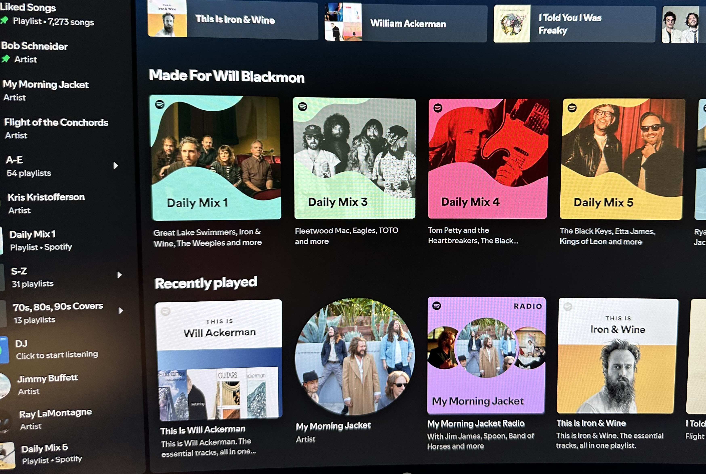
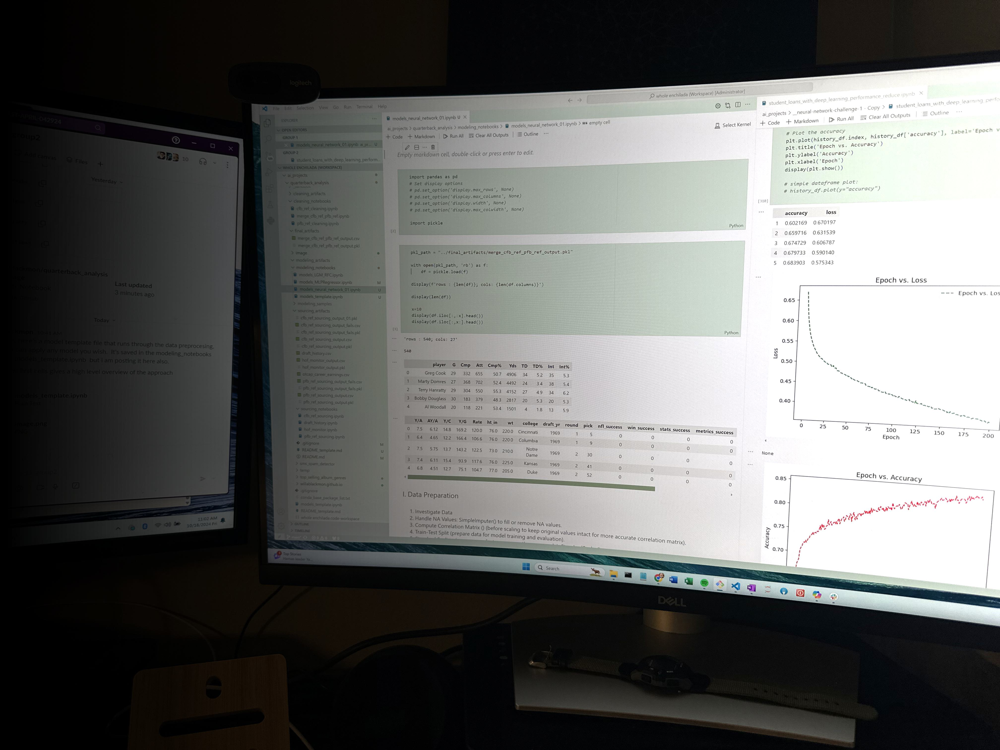

NFL Quarterback Success Predictions
Predicting NFL game outcomes using various machine learning models and historical game data.
Technologies: Python, Scikit-learn, machine learning algorithms.
SMS Spam Classification with SVC and Gradio
Classifying SMS messages using Support Vector Classification and creating an interactive demo with Gradio.

Technologies: Python, Scikit-learn, Gradio.
Predicting Popularity of Music Genres
Investigating the rise and fall of the popularity of music genres and predicting future trends using Prophet.
Technologies: Python, Prophet, time-series analysis.
Spotify Playlist Data Analysis
Data cleaning and investigation of trends in Spotify streams, playlists, and genre popularity over time.
Technologies: Python, Pandas, Matplotlib.
Neural Network 2, Employee Attrition
Cleaning and preprocessing data for a neural network model predicting employee attrition.
Technologies: Python, TensorFlow, Keras.
Neural Network 1, Loan Predictions
Cleaning and preprocessing data for a neural network model predicting loan defaults.
Technologies: Python, Pandas, TensorFlow.
Crypto Clustering with K-Means
Exploratory data analysis (EDA) and creation of a machine learning model to investigate clustering of cryptocurrency market data using k-means.
Technologies: Python, Pandas, Scikit-learn, K-Means, PCA.
Forecasting Stock Trends with Prophet
Prophet for time-series modeling on Google search and impact on MercadoLibre stock price.

Technologies: Python, Prophet, time-series forecasting.
Movie Reviews Data Sourcing and Analysis
Movie-review data analysis from The New York Times and The Movie Database (TMDb).

Technologies: Python, Pandas, API integration, JSON.
Athletic Sales Analysis
Sales trend analysis on multi-year athletic sales.

Technologies: Python, Pandas, pivot tables, time-series analysis.